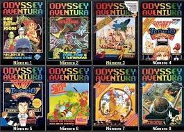
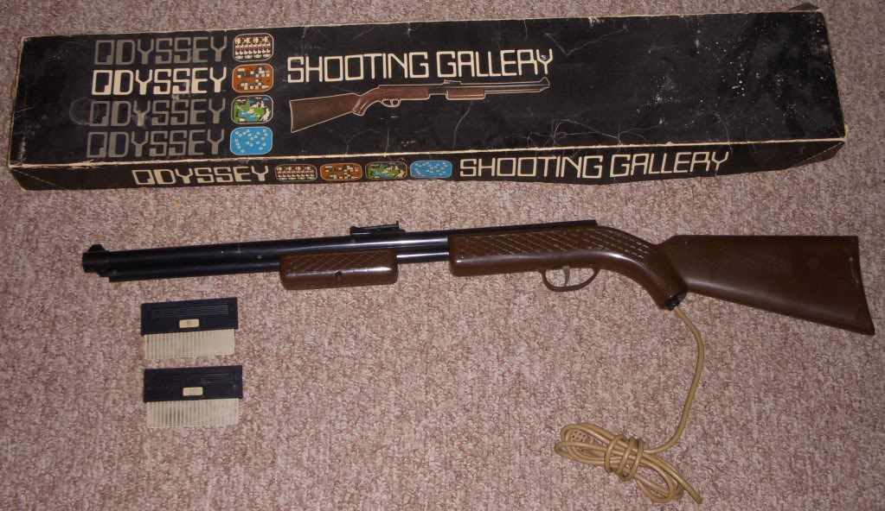

Evolução dos videogames
Olaaaaa!!!Seja bem vindo ao mundo dos videogames!!!Aqui irei trazer tudo que sei sobre video game.Não sou nenhuma expert,mas é algo que me interessa por demais e me gera muitas curiosidades.Então borá lá
Nao podemos começar falando de videogames sem antes sabermos como ele chegou ate nos e toda a sua evolucao
EVOLUCAO...
Você sabia que o primeiro console de videogame do mundo se chamava Magnavox Odyssey?
O aparelho foi lançado em 1972 pela empresa Magnafox uma subsidiária da Philips, e ficou famoso por trazer uma tecnologia incrível para a época: conectar-se à televisão. Criado pelos engenheiros Ralph Baer, Bill Harrison e Bill Rusch. Porém, quem é considerado o “pai dos videogames” é Baer(1922-2014), um alemão naturalizado estadunidense.
.jpg "Baer")
Apesar de impressionante, o Odyssey várias limitações técnicas, como a ausência de cores e de áudio, por exemplo. Os gráficos também eram bem simples: um dos games mais famosos era um “ping-pong”, em que os jogadores moviam duas barras de luz para acertar uma bola em movimento.
O console era alimentado por bateria e vinha com dados, planilhas de pontuação (o jogador precisava anotar tudo manualmente), fichas de pôquer e tabuleiros de jogo. Baer tambem desenvolveu a primeira light gun do mundo, uma arminha plástico que simula tiros na tela.
O Odyssey teve 350 mil unidades vendidas. Porém, alguns fatores prejudicaram esse sucesso comercial,como o próprio marketing do produto: muitos consumidores tinham a falsa impressão de que o videogame só funcionaria em aparelhos de TV da mesma marca, a Magnavox — essa informaçao era falsa.
Outro fator que prejudicou as vendas foi o lançamento do ping um “clone” que marcou a fundação da Atari com os mesmos jogos do Odysey.Futuramente Atari pagou a Magnafox para continuar suas vendas levando ao fim do nosso velhinho.
Caso queira saber mais,deixo esse video incrivel do Canal Super Bit Word para voce